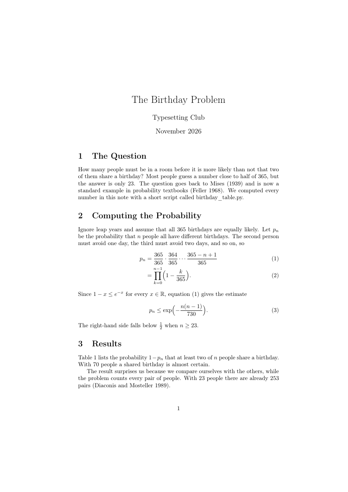
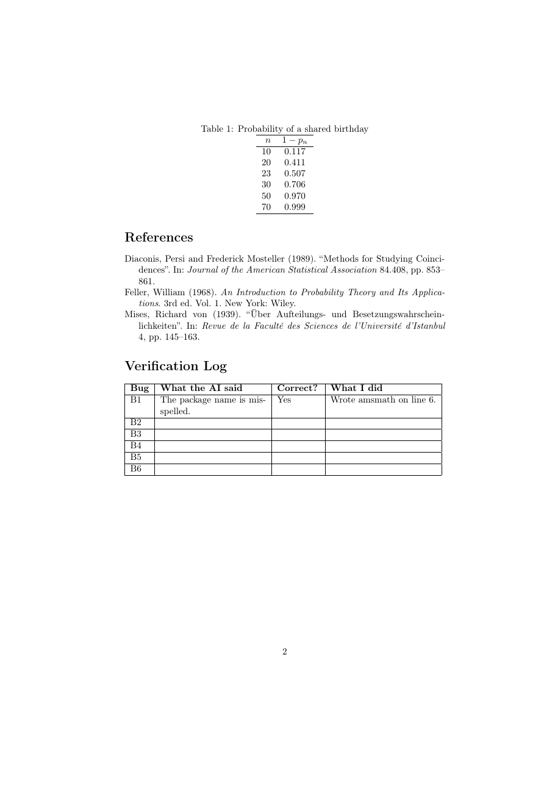

วัตถุประสงค์
เมื่อจบ Workshop นี้ นักศึกษาจะสามารถ
- เขียนคำถาม (พรอมต์) ถึงแชตบอต AI ที่มีข้อมูลครบ ได้แก่ โปรแกรมที่ใช้คอมไพล์ ข้อความผิดพลาดทั้งหมด และโค้ดส่วนที่เกี่ยวข้อง
- ตัดสินว่าคำอธิบายจาก AI ถูกหรือผิด โดยคอมไพล์จริงและเทียบผลกับชิ้นงานต้นแบบ ไม่ใช่เชื่อตามความมั่นใจของคำตอบ
- แก้ข้อผิดพลาดและคำเตือนที่พบบ่อย (แพ็กเกจ อักขระพิเศษ สภาพแวดล้อม คำสั่งที่ไม่รู้จัก การอ้างอิง) ทีละจุดตามลำดับที่ปรากฏ
- บันทึกการตรวจสอบเป็นตารางในเอกสาร ว่า AI ตอบอะไร ถูกหรือไม่ และแก้อย่างไร
ไฟล์ที่ได้รับ
ดาวน์โหลด debugging_with_ai.zip แล้วแตกไฟล์ไว้ในที่ที่หาง่าย จะได้โฟลเดอร์ debugging_with_ai ดังนี้
debugging_with_ai/
├── doc.pdf ชิ้นงานต้นแบบ (2 หน้า) หลังแก้ครบทุกจุด
├── warmup.tex ไฟล์สั้น ๆ ที่มีจุดผิด 1 จุด สำหรับ Part A
├── main.tex บทความที่มีจุดผิด 6 จุดโดยตั้งใจ สำหรับ Part B
├── refs.bib ฐานข้อมูลบรรณานุกรม (ไม่มีจุดผิด ไม่ต้องแก้)
└── ai_answers.txt ตัวอย่างคำตอบจาก AI สำหรับ Part A และ Bดูไฟล์แยกทีละไฟล์ได้ที่
warmup.tex,
main.tex,
refs.bib,
ai_answers.txt
เตรียมเครื่อง
ประมาณ 10 นาที- เปิดโฟลเดอร์
debugging_with_aiใน Sublime Text และเปิดเทอร์มินัลในโฟลเดอร์เดียวกัน - เปิดแชตบอต AI ในเบราว์เซอร์ แล้วเริ่มแชตใหม่สำหรับ Workshop นี้
- เปิด
ai_answers.txtไว้อีกแท็บหนึ่งใน Sublime Text ไฟล์นี้มีคำตอบตัวอย่างที่ทุกคนใช้ร่วมกัน เพื่อให้คุยกันในชั้นเรียนได้ แม้แชตบอตของแต่ละคนจะตอบไม่เหมือนกัน
main.tex ตลอด และเปลี่ยนชื่อไฟล์เป็นรหัสนักศึกษาเฉพาะตอนส่งงานเท่านั้น
อุ่นเครื่อง
ประมาณ 30 นาทีใช้ไฟล์ warmup.tex ซึ่งมีจุดผิด 1 จุด เป้าหมายคือฝึกถาม AI ให้ได้คำตอบที่ใช้ได้ และตรวจคำตอบนั้นด้วยตนเอง
- A0 คอมไพล์
warmup.texโดยยังไม่แก้อะไร
เทอร์มินัลจะหยุดที่เครื่องหมาย$ latexmk -pdf warmup.tex?พร้อมข้อความนี้
พิมพ์ x แล้วกด Enter เพื่อหยุดRunaway argument? {bold phrase that never ends. The third sentence is fine again. \par \ETC. ! File ended while scanning use of \textbf . <inserted text> \par <*> warmup.texข้อความนี้บอกหมายเลขบรรทัดหรือไม่ บรรทัด
Runaway argument?ช่วยบอกตำแหน่งของปัญหาได้อย่างไร - A1 ถามแบบไม่ดี พิมพ์ถาม AI สั้น ๆ ว่า
เทียบคำตอบที่ได้กับคำตอบตัวอย่างหัวข้อmy latex doesn't work, how do I fix it[A3 - คำตอบเมื่อถามว่า "my latex doesn't work..."]ในai_answers.txtคำตอบช่วยแก้ไฟล์นี้ได้จริงหรือไม่ AI ขาดข้อมูลอะไรบ้าง
- A2 ถามแบบดี เริ่มแชตใหม่ แล้วคัดลอกพรอมต์นี้ไปวาง แทนส่วนในวงเล็บเหลี่ยมด้วยข้อความจริงจากเทอร์มินัลและเนื้อหาทั้งไฟล์
warmup.texI compile this LaTeX file with pdflatex (via latexmk). This is the complete error message from the terminal: [paste every line from "Runaway argument?" to the ? prompt] This is the whole file: [paste warmup.tex] Explain the cause in two sentences. Then show only the line or lines I need to change. Do not rewrite the whole file.พรอมต์นี้บอกอะไร AI ที่ A1 ไม่ได้บอก ทำไมจึงขอให้แสดงเฉพาะบรรทัดที่ต้องแก้
- A3 เทียบคำตอบ อ่านคำตอบตัวอย่างหัวข้อ
[A3 - คำตอบเมื่อถามด้วยพรอมต์ที่ดี ...]ในai_answers.txtแล้วเทียบกับคำตอบที่แชตบอตของนักศึกษาให้มาทั้งสองคำตอบชี้บรรทัดเดียวกันหรือไม่ ถ้าไม่ตรงกัน จะตัดสินอย่างไรว่าคำตอบใดถูก
- A4 ตรวจด้วยการคอมไพล์ แก้ไฟล์ตามคำตอบ แล้วสั่ง
latexmk -pdf warmup.texอีกครั้ง เปิด PDF ดูว่าตัวหนามีเฉพาะวลี bold phrase that never ends หรือไม่คอมไพล์ผ่านแล้วถือว่าแก้ถูกเสมอหรือไม่ ต้องดูอะไรเพิ่มอีก
- A5 ระวังสิ่งที่ไม่ได้ขอ ขอให้ AI ทำให้ประโยค
This paragraph comes later.เป็นสีแดง แล้วทำตามคำตอบAI เพิ่มแพ็กเกจหรือแก้ส่วนอื่นที่ไม่ได้ขอหรือไม่ คำสั่งที่ได้ตรงกับที่เรียนใน Workshop รูปภาพและสี หรือไม่
งานหลัก
ประมาณ 60 นาทีmain.tex เป็นบทความ 2 หน้าที่มีจุดผิด 6 จุด (B1–B6) แก้ให้คอมไพล์ผ่านโดยไม่มีคำเตือน และได้ผลเหมือน doc.pdf
แล้วเติมตาราง Verification Log ท้ายเอกสารให้ครบ คอมไพล์ด้วย
$ latexmk -pdf main.tex

ขั้นตอนสำหรับแต่ละจุด
- คอมไพล์ แล้วอ่านข้อความผิดพลาดอันแรกเท่านั้น ที่เครื่องหมาย
?พิมพ์ x แล้วกด Enter - อ่านคำตอบตัวอย่างของจุดนั้นใน
ai_answers.txtและถามแชตบอตของตนเองด้วยพรอมต์แบบ A2 - ตัดสินว่าคำอธิบายถูกหรือไม่ โดยลองแก้ คอมไพล์ และเทียบกับ
doc.pdf - แก้ในบรรทัดเดิม ห้ามเพิ่มหรือลบบรรทัด หมายเลขบรรทัดจะได้ตรงกับหน้านี้
- เขียนผลลงในตาราง Verification Log หนึ่งแถว แล้วไปจุดถัดไป
ข้อความที่จะพบ
ข้อความต่อไปนี้คัดลอกจากการคอมไพล์ main.tex จริง จุดถัดไปจะปรากฏหลังแก้จุดก่อนหน้าแล้วเท่านั้น
- B1
ที่! LaTeX Error: File `amsmaths.sty' not found. Type X to quit or <RETURN> to proceed, or enter new name. (Default extension: sty) Enter file name:Enter file name:พิมพ์ x แล้วกด Enter เพื่อหยุดเช่นกัน แถว B1 ของตารางเติมไว้ให้เป็นตัวอย่างแล้ว - B2
! Missing $ inserted. <inserted text> $ l.25 with a short script called birthday_ table.py.ถ้าทำตามคำตอบตัวอย่างแล้วคอมไพล์ผ่าน ชื่อไฟล์ในบรรทัดนั้นหน้าตาเหมือนใน
doc.pdfหรือไม่ - B3
! LaTeX Error: \begin{align} on input line 32 ended by \end{equation}. ... l.36 \end{equation} - B4
! Undefined control sequence. l.37 Since $1-x \le e^{-x}$ for every $x \in \R $, equation~\eqref{eq:product}ลองทำตามคำตอบตัวอย่างในไฟล์สำเนา ข้อความผิดพลาดหายไปหรือไม่ แพ็กเกจที่คำตอบแนะนำถูกโหลดอยู่แล้วหรือไม่ (ดูบรรทัดที่ 7)
- B5–B6 เมื่อไม่มีข้อผิดพลาดแล้ว latexmk จะสรุปคำเตือนท้ายผลลัพธ์
B5 คือ citation และ B6 คือ reference PDF สร้างได้แล้ว แต่ยังมีคีย์ตัวหนาและเครื่องหมายLatexmk: Summary of warnings from last run of *latex: Latex failed to resolve 1 reference(s) Latex failed to resolve 1 citation(s) Latexmk: ====Problematic refs and citations with line #s in .tex file: Citation 'mises1939' on page 1 undefined on input line 23 Reference `tab:value' on page 1 undefined on input line 46??
คำแนะนำ
| จุดผิด | เรื่องที่ควรทบทวน |
|---|---|
| B1 | ชื่อแพ็กเกจคณิตศาสตร์ในบทเรียน Mathematics |
| B2 | อักขระพิเศษในข้อความธรรมดา (บทเรียน Formatting Text) |
| B3 | คู่ \begin และ \end ต้องมีชื่อเดียวกัน |
| B4 | คำสั่งที่มีมากับแพ็กเกจ กับคำสั่งที่ต้องสร้างเอง (บทเรียน Thai, Macros and Large Documents) |
| B5–B6 | คีย์ใน refs.bib และชื่อใน \label ต้องตรงกันทุกตัวอักษร |
คำใบ้เพิ่มเติม (เปิดดูเมื่อติด)
- คำตอบตัวอย่างใน
ai_answers.txtมีบางข้อผิด อย่าเติม Yes ในตารางจนกว่าจะทดลองแล้ว - อักขระพิเศษในข้อความ ได้แก่
# $ % & _ { }ทบทวนได้จาก Workshop การจัดรูปแบบข้อความ - คำสั่งที่ AI บอกว่า "มีอยู่ในแพ็กเกจ" ตรวจได้ด้วยการลองคอมไพล์ หรือค้นในเอกสารของแพ็กเกจด้วย
texdoc - ถ้าคำเตือนเรื่อง citation ไม่หายหลังแก้คีย์ ให้สั่ง
latexmk -Cแล้วคอมไพล์ใหม่
ส่งงาน
เมื่อแก้ครบและเติมตารางแล้ว เปลี่ยนชื่อไฟล์เป็น debugging_with_ai_<รหัสนักศึกษา>.tex แล้วสั่ง latexmk -pdf debugging_with_ai_<รหัสนักศึกษา>.tex ส่งไฟล์ .tex และ .pdf
รายการตรวจสอบก่อนส่ง
ท้าทาย
ไม่บังคับ · ประมาณ 20–30 นาทีทำเพิ่มหลังส่งงาน Part B แล้ว ในสำเนาของ main.tex ข้อใดก็ได้
- C1 แทนที่จะเขียน
\mathbb{R}ในเนื้อความ ให้นิยามคำสั่ง\Rเองในส่วนนำ ด้วยวิธีจากบทเรียน Thai, Macros and Large Documents (ข้อนี้เพิ่มบรรทัดได้)วิธีนี้ดีกว่าการเขียน
\mathbb{R}ทุกครั้งอย่างไร - C2 ถามแชตบอตซ้ำว่า
Is \R a standard LaTeX command? Which package defines it?ในแชตใหม่ 2 ครั้งคำตอบทั้งสองครั้งตรงกันหรือไม่ และตรงกับผลการคอมไพล์ใน B4 หรือไม่
- C3 นำข้อความผิดพลาดที่เคยเจอจาก Workshop ก่อนหน้ามาถาม AI ด้วยพรอมต์แบบ A2 แล้วเพิ่มเป็นแถว C3 ในตาราง Verification Log
ข้อผิดพลาดที่พบบ่อย
| อาการ | สาเหตุและวิธีแก้ |
|---|---|
เทอร์มินัลค้างที่ Enter file name: |
LaTeX หาไฟล์ที่ \usepackage ระบุไม่พบ พิมพ์ x แล้วกด Enter จากนั้นตรวจชื่อแพ็กเกจ |
| หมายเลขบรรทัดไม่ตรงกับหน้านี้ | มีการเพิ่มหรือลบบรรทัดระหว่างแก้ แก้ไฟล์ให้กลับเป็นจำนวนบรรทัดเดิม หรือแตกไฟล์ main.tex จาก zip ใหม่ |
| AI ส่งไฟล์ทั้งไฟล์มาให้ใหม่ | อย่าวางทับทั้งไฟล์ เพราะ AI อาจแก้ส่วนอื่นโดยไม่บอก ขอให้แสดงเฉพาะบรรทัดที่ต้องแก้ |
| AI แนะนำให้ติดตั้งแพ็กเกจหรือใช้คำสั่งที่หาไม่พบ | AI อาจแต่งชื่อขึ้นมาเอง ตรวจด้วย texdoc <ชื่อแพ็กเกจ> หรือค้นที่ CTAN ก่อนเชื่อ |
คอมไพล์ผ่านแล้วแต่ผลไม่เหมือน doc.pdf |
วิธีแก้ของ AI อาจแค่ทำให้ข้อความผิดพลาดหายไป ไม่ได้แก้ที่สาเหตุ เทียบ PDF ทุกครั้ง |
| คำตอบของ AI เปลี่ยนไปเมื่อถามซ้ำ | เป็นเรื่องปกติของแชตบอต ใช้ผลการคอมไพล์เป็นตัวตัดสิน ไม่ใช่คำตอบที่พูดมั่นใจกว่า |
แหล่งอ้างอิง
- สไลด์บทเรียน Typesetting with AI Assistance (Prompting for LaTeX, Typical AI Failures, The Verify Loop)
- หัวข้อการอ่านข้อความผิดพลาดใน Workshop การจัดรูปแบบข้อความ
- The Not So Short Introduction to LaTeX (เปิดด้วย
texdoc lshort)